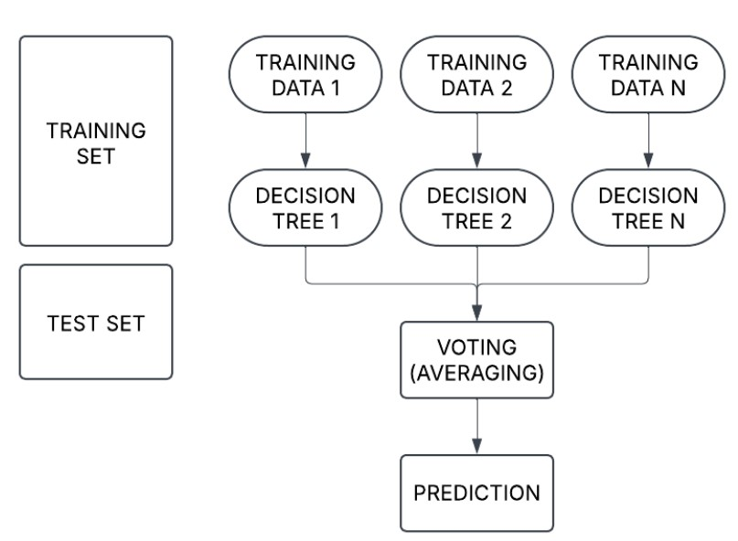
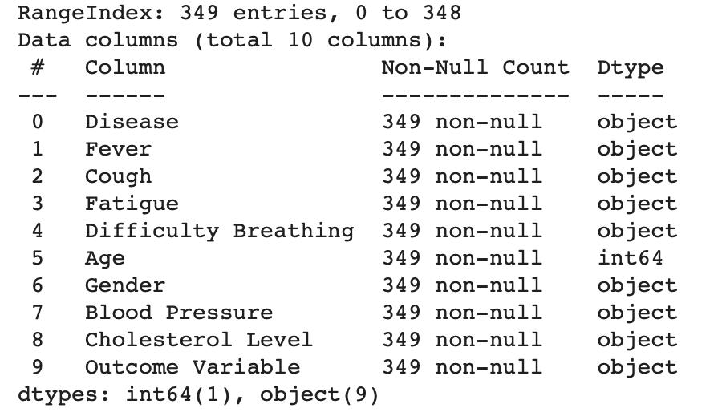
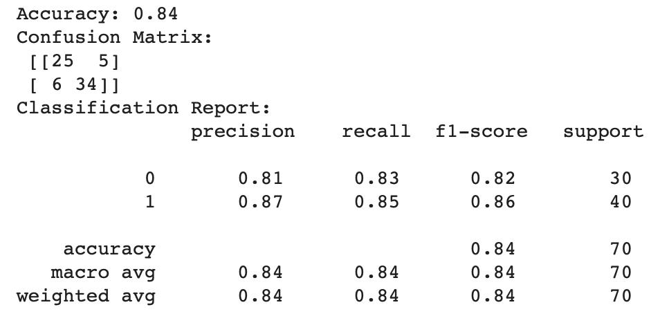
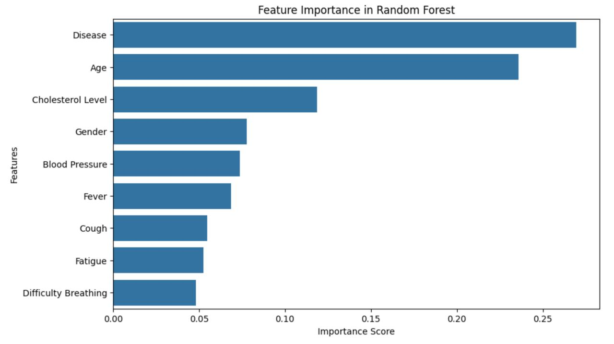
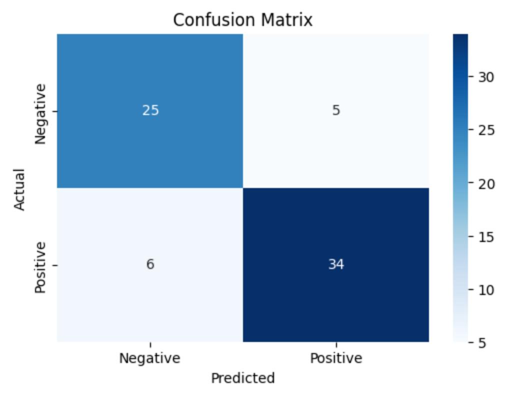
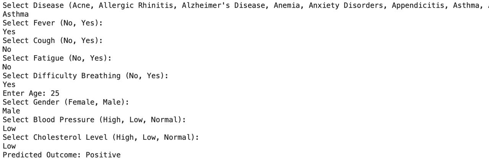

MACHINE LEARNING AND PREDICTIVE ANALYATICS IN HEALTH CARE
A DATA-DRIVEN APPROACH TO DISEASE PREDICTION
Table of Contents
INTRODUCTION
DEFINING THE PROBLEM
The growing patient data databases improve predictive models which allows developers to find diseases earlier when creating personalized treatments. Medical researchers deploy the Random Forest Classifier to evaluate historic healthcare data in order to identify diseases based on statistical probability. The goal involves employing machine learning methods to enhance diagnosis precision to let healthcare personnel execute early interventions and change treatment protocols.
CONTEXT AND BACKGROUND
Healthcare predictive analytics requires different statistical and machine learning models for analyzing structured along with unstructured data. Doctors often achieve poor results when using logistic regression due to its inability to understand complex nonlinear patterns in medical data. Robotics systems play a crucial role in healthcare because the Random Forest Classifier shows strong capabilities when dealing with large medical datasets that have value imbalances.
The healthcare prediction field benefits from using decision trees as well as support vector machines (SVMs) and neural networks according to previous research findings. Multiple trees combined through Random Forest outperform single decision trees since they work together to achieve more stable and accurate classifications according to Breiman (2001). The Random Forest algorithm will serve as the prediction model for assessing patient disease risk based on their medical data.
OBJECTIVES AND GOALS
For this project, we must be nearing to the goals we have set those are given as follows
- The implementation of Random Forest Classifier for disease prediction requires patient data processing.
- Compare model performance against baseline classifiers such as logistic regression.
- The model needs evaluation through accuracy measurement combined with precision rates and recall scores and AUC-ROC calculations.
- The analysis of feature importance allows us to determine which factors serve as the main predictors for disease diagnosis.
- Build functionality into the model which deals effectively with healthcare sector datasets that have an unbalanced distribution.
- Achieve better performance metrics with an improved computational speed.
- Create an easy-to-use system that enables healthcare staff to use machine learning analytic results in their work.
- Compare model performance against baseline classifiers such as logistic regression.
- The accuracy precision recall and AUC-ROC metrics will be used in a performance analysis of the model.
- Use feature importance to comprehend the major disease prediction factors.
SUMMARY OF APPROACH
Random forest classifier
The Random Forest model implementation in scikit-learn needs parameter adjustment enabled by the library to reach maximal performance levels.
Selecion and training
The evaluation of the model effectiveness depends on cross-validation analysis together with key performance indicators including accuracy as well as precision and recall and AUC-ROC.
Analysis
Embedding vital patient features related to prediction accuracy helps healthcare professionals better understand the analysis results.
Data acquisition and preprocessing
The first operational step requires dataset loading for subsequent healthcare data cleaning procedures which integrate feature engineering tasks.
Model training
Scikit-learn operates through the system to conduct Random Forest model training procedures.
METHODOLOGY
DATA ACQUISITION AND SOURCES
The “Disease Symptoms and Patient Profile Dataset” originates from Kaggle and features structured information about demographic data as well as symptoms together with diagnosed diseases. The dataset originated from healthcare records which have undergone anonymization and combined with symptom assessment reports. The preprocessing operations start with dealing with missing data elements followed by encoding categorial attributes and performing scale normalization on numerical features to enhance both consistency and model prediction accuracy.
An ensemble learning method called Random Forest Classifier consists of multiple decision trees in its structure. The model performs prediction on outcome by collecting decision tree predictions from multiple trees that use features .
\[ \ \hat{y} = \frac{1}{T} \sum_{t=1}^{T} h_t(x) \ \]
The ensemble consists of trees denoted by within a total of trees. The split criterion depends on Gini Impurity which defines as:
\[ Gini = 1 - \sum_{i=1}^{n} p_i^2 \]
The formula for calculating Gini impurity includes the proportion of class in a node represented by Pi and C the total number of classes.
ANALYTICAL PROCEDRUES
A sequential guide explains how the Random Forest model should be trained along with its evaluation process:

- The program retrieves the dataset by reading the CSV file.
- The data needs preprocessing to handle missing values, conduct categorical variable encoding and normalize all numerical features.
- The dataset requires division into training segments comprising 80% of the data while the remaining 20% constitutes the testing portion.
- RandomForestClassification The model gets implemented through
scikit-learntools while completing hyperparameter optimization for better results.- Important predictors can be determined through the application of
feature_importances_. - we have to plot sensitivity versus specificity through Receiver Operating Characteristic curve plotting.
- We need to create data visualisation through the classifier in
seaborn
- Important predictors can be determined through the application of
- Evaluation metrics
- Accuracy : the proportions of correct predictions
\[ Accuracy = \frac{TP+TN}{TP+TN+FP+FN} \]
- Precision : The ration of true to total predictions
\[ Precision = \frac{TP}{TP+FP} \]
- Recall : The ability of model to identify the predictions
\[ Recall = \frac{TP}{TP+FN} \]
TP : True Positives
TN : True Negatives
FP : False Positives
FN : False Negatives
SOFTWARES AND TOOLS
The platform I used is Python together with its library components:
Pandasfor data manipulation.- The implementation of
Random forest classifierhappens through scikit-learn framework. MatplotlibandSeabornfor data visualization.Numpyis used for numerical computations and arrays handling.Google Colabis used for cloud based computations and handling the code exeutions without GPU/CPU.
PROCEDURES
STEP-1 We need to install the necessary libraries
import pandas as pd
import numpy as np
import matplotlib.pyplot as pltSTEP-2 IMPORT SCIKIT-LEARN TOOLS
Installing scikit-learn for data splitting, Scaling, Modeling and Evaluation
from sklearn.model_selection import train_test_split
from sklearn.preprocessing import StandardScaler
from sklearn.ensemble import RandomForestClassifier
from sklearn.metrics import classification_report, confusion_matrix, roc_auc_score, roc_curveSTEP-3 LOADING THE DATASET
data = pd.read_csv("/content/Disease_symptom_and_patient_profile_dataset.csv")data.info()
data.head(5)
data.shape
STEP-4 DATA CLEANING AND ENCODING Now after data skimming and trimming we need to categorize the variables in the dataset.
label_encoders = {}
for col in df.columns:
if df[col].dtype == 'object':
le = LabelEncoder()
df[col] = le.fit_transform(df[col])
label_encoders[col] = leSTEP-5 TRAIN-TEST SPLIT AND MODEL TRAINING
X = df.drop(columns=['Outcome Variable'])
y = df['Outcome Variable']
X_train, X_test, y_train, y_test = train_test_split(X, y, test_size=0.2, random_state=42)
rf = RandomForestClassifier(n_estimators=100, random_state=42)
rf.fit(X_train, y_train)
y_pred = rf.predict(X_test)STEP-6 MODEL EVALUATION
accuracy = accuracy_score(y_test, y_pred)
conf_matrix = confusion_matrix(y_test, y_pred)
class_report = classification_report(y_test, y_pred)
print(f'Accuracy: {accuracy:.2f}')
print('Confusion Matrix:\n', conf_matrix)
print('Classification Report:\n', class_report)
STEP-7 DATA VISUALISATION
A.Feature importance plot
feature_importances = pd.Series(rf.feature_importances_, index=X.columns).sort_values(ascending=False)
plt.figure(figsize=(10, 6))
sns.barplot(x=feature_importances, y=feature_importances.index)
plt.xlabel('Importance Score')
plt.ylabel('Features')
plt.title('Feature Importance in Random Forest')
plt.show()VISUALISATION FOR THE FEATURE IMPORTANCE

#### B.Confusion matrix Heatmap
plt.figure(figsize=(6, 4))
sns.heatmap(conf_matrix, annot=True, fmt='d', cmap='Blues', xticklabels=label_encoders['Outcome Variable'].classes_, yticklabels=label_encoders['Outcome Variable'].classes_)
plt.xlabel('Predicted')
plt.ylabel('Actual')
plt.title('Confusion Matrix')
plt.show()CONFUSION MATRIX - ACTUAL VS PREDICTED

Now based on the data given and predictions taken from the dataset, now we make model to predict the diseases bsed on the symptoms we input to it
STEP-8 DISEASE PREDICTION
def predict_disease():
user_input = {}
for col in X.columns:
if col in label_encoders:
options = list(label_encoders[col].classes_)
print(f"Select {col} ({', '.join(options)}): ")
value = input()
user_input[col] = label_encoders[col].transform([value])[0]
else:
value = input(f"Enter {col}: ")
user_input[col] = int(value)
input_df = pd.DataFrame([user_input])
prediction = rf.predict(input_df)[0]
predicted_disease = label_encoders['Outcome Variable'].inverse_transform([prediction])[0]
print(f"Predicted Outcome: {predicted_disease}")
if __name__ == "__main__":
predict_disease()MODEL INPUTS
